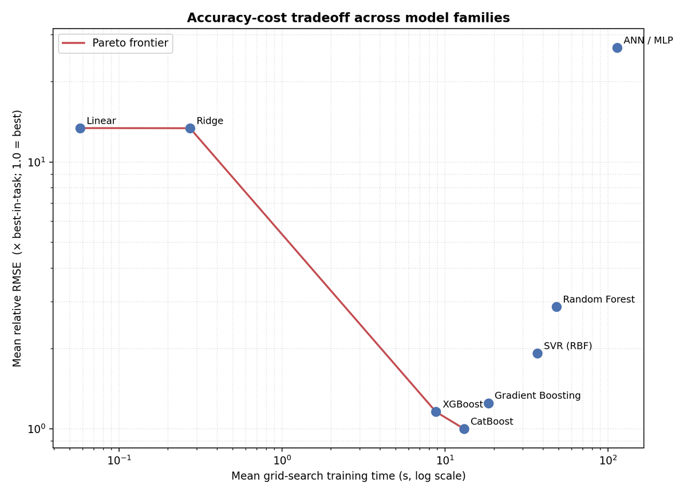
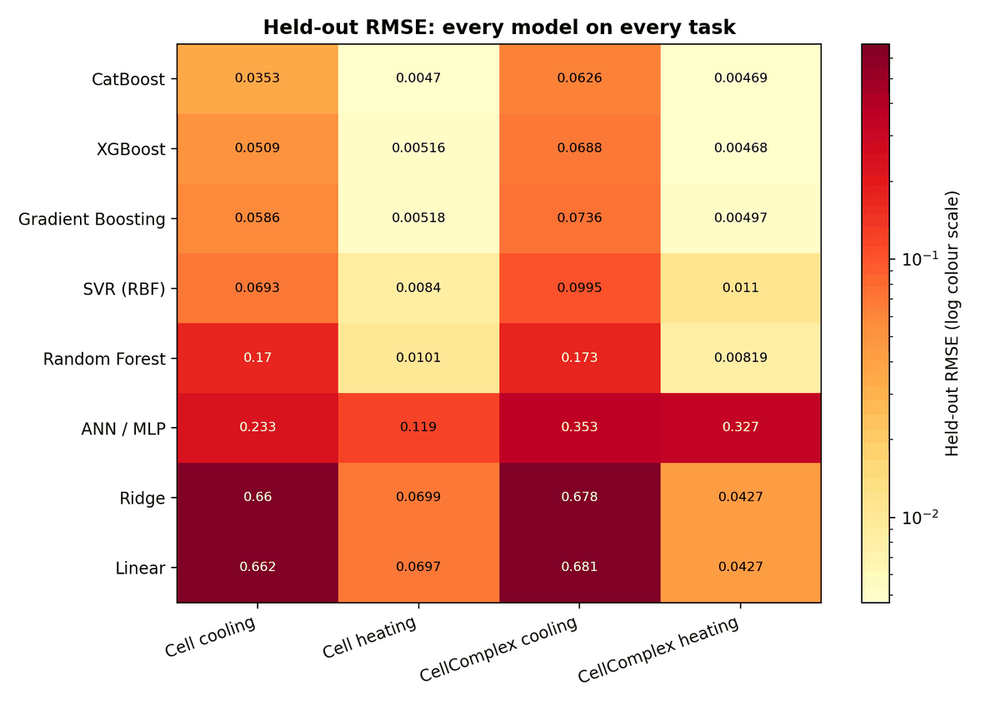
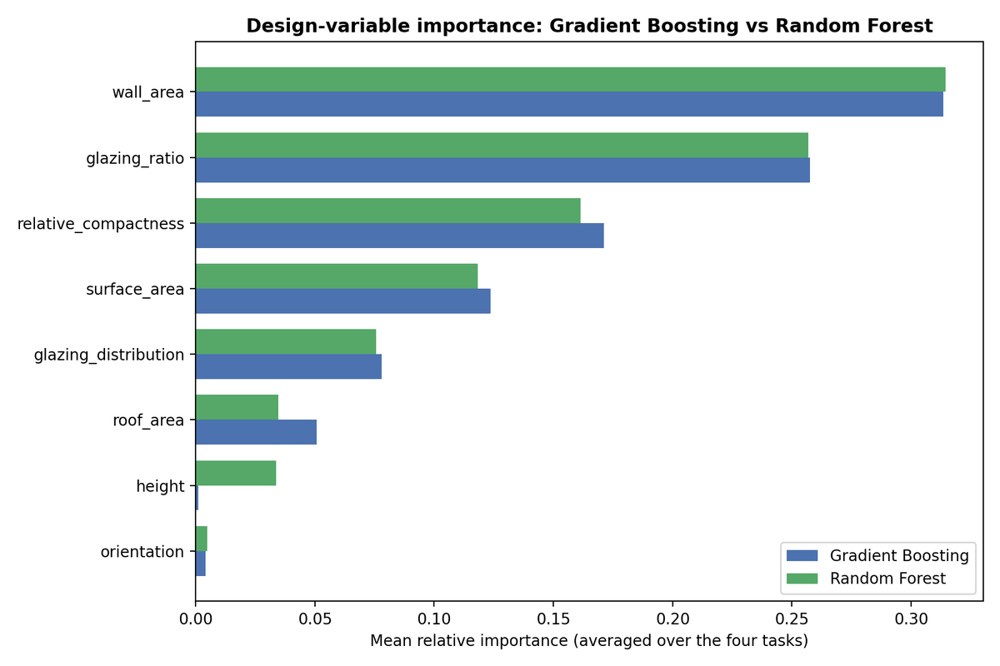
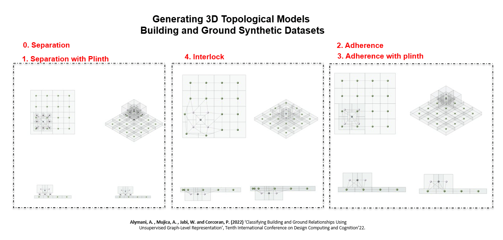
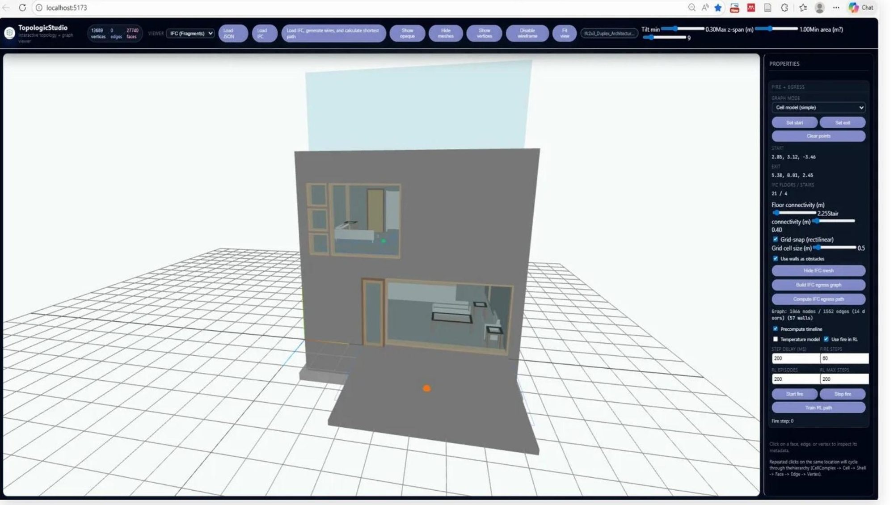
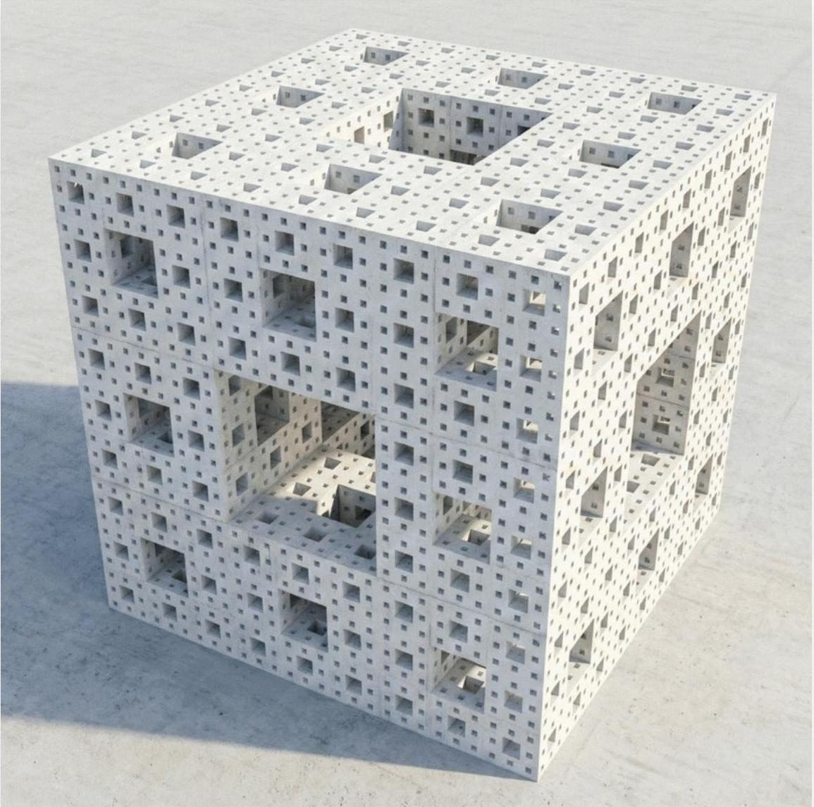

Benchmarking machine-learning models for building energy demand
Eight model families ranked under one protocol for predicting heating and cooling loads across single-zone and multi-zone building topologies.



Most building-energy machine-learning papers demonstrate one model family and report that it worked. That leaves a designer with no basis for choosing between them, and no idea whether the result survives a change of building representation.
This study restructures the problem as a comparative benchmark. A simulation-derived dataset of 1,536 cases, generated with the Topologic and TopologicPy parametric workflow, spans 12 building types, four orientations, four glazing ratios, five glazing distributions and two heights — expressed twice, as single-zone Cell and multi-zone CellComplex topologies. That gives four prediction tasks: Cell cooling, Cell heating, CellComplex cooling and CellComplex heating.
Eight model families — Linear, Ridge, RBF-kernel SVR, Random Forest, Gradient Boosting, XGBoost, CatBoost and an ANN/MLP — are compared under one shared train-test split, one cross-validation scheme and one metric set, with every model receiving the identical eight design predictors. Because the information is held constant, the differences reflect the learners rather than unequal inputs.
The two gradient-boosting libraries lead every task. CatBoost records the lowest held-out RMSE in three of the four tasks and the lowest mean error overall; XGBoost takes the fourth. CatBoost also sits at the accuracy-cost knee, training in ten to fifteen seconds and predicting in under twenty microseconds per case. The ANN/MLP does not improve on the tree ensembles under the present tuning budget. Feature-importance analysis identifies wall area, glazing ratio and relative compactness as the dominant design drivers.
More in Design Intelligence

Graph ML for building–ground topology
Unsupervised graph-level representation learning that classifies how a building meets the ground, trained on synthetic 3D topological datasets.
View project →
AI-informed fire egress from IFC models
A web-based graph-ML tool that computes optimal evacuation paths directly from IFC building models, linking design geometry to life-safety performance.
View project →
Encoding architectural intent across generative platforms
A pre-registered factorial study of how AI image-generation platforms handle architectural instruction, benchmarked against geometry that is hard to fake.
View project →